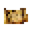

History of CrabSMP
From one Realm in 2022 to the server you play on today.
Timeline
-
One Realm
CrabSMP opens as a single Minecraft Realm.
-
Two Realms
As more players join, the server splits into a lifesteal Realm and a classic Realm.
-
First closure
CrabSMP is discontinued.
-
Back again
CrabSMP returns after two months away.
-
Second closure
CrabSMP is discontinued for a second time.
-
The return that stuck
CrabSMP starts up again and has been online ever since.
-
Nexus
The server moves to its own custom engine and runs for a few months under the name Nexus.
-
Crab again
The name goes back to CrabSMP, and it has stayed that way: a Bedrock lifesteal server at play.crabsmp.net.
The Realm years
CrabSMP began as one Minecraft Realm in 2022. Over that year the community grew enough to need a second, and the server became two Realms, each with its own way to play.

Classic Realm Vanilla CrabSMP with no lifesteal: survival with friends, nothing changed.Breaks and returns
CrabSMP has stopped and started more than once. It was discontinued in August 2022 and brought back in October 2022. That run lasted until February 2023, when it was discontinued again.
It started back up in July 2024, and it has been up ever since.
Nexus and back
At the start of 2026 the server moved onto its own custom engine, and for a few months it went by the name Nexus. In April 2026 it changed back to CrabSMP. If you hear older players talk about Nexus, they mean this server.
You can still spot the old name in game: the top tier of custom gear is Nexus gear, one step above Crab gear.
Who runs it
CrabSMP is run by Jacob, who goes by Ozz online. Back in 2022 the name was Smoothie; it changed to Ozz in 2023 and has stayed that way since. Ozz has run CrabSMP through every version of it, from the first Realm to today.
- Owner
- Ozz (Jacob)
- Known as
- Smoothie in 2022, Ozz since 2023
- Started
- 2022, as one Realm
- Online since
- July 2024